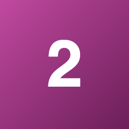
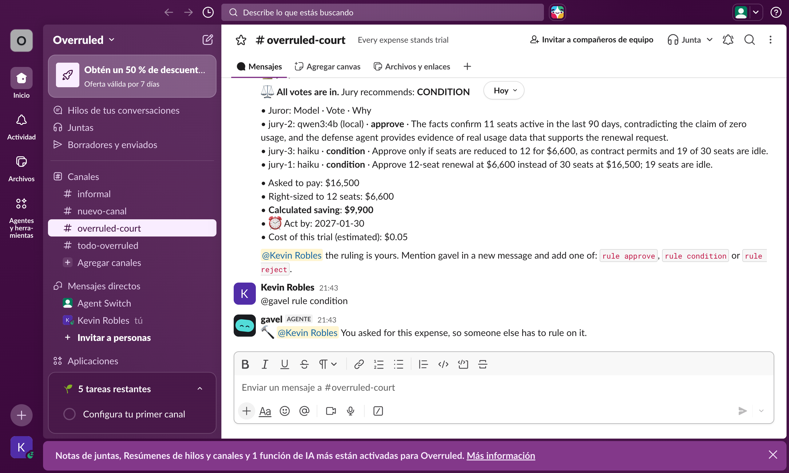

Idle seats
Licenses keep renewing for people who stopped using the tool.
Overruled compares seats with real sign-ins.Companies approve renewals on one side of the story, then pay for idle seats, hidden price increases and missed deadlines. Overruled puts every renewal on trial in your team chat, with verified evidence, before a person decides.
The person who wants the tool usually writes the request and reads the contract. Finance sees a total, approves it, and the terms repeat for another year.
Licenses keep renewing for people who stopped using the tool.
Overruled compares seats with real sign-ins.Automatic increases sit in annexes that few people read.
Overruled quotes the clause, with file and line.Once the notice date passes, the contract renews as written.
Overruled flags the date before it's too late."Everyone uses it" and big value estimates go unchecked.
Overruled strikes what isn't in evidence.Request → one opinion → quick approval → another year
Evidence → both sides argued → independent votes → an accountable decision
It runs in the chat your teams already use, so nobody has to learn another procurement tool.
It reads inventory, sign-ins, bills and contracts, then opens a trial before the notice deadline passes.
Code, no AI. It calculates the money, cites file and line, and strikes figures that aren't in evidence.
Real Claude Code agents fight for and against the expense. The person who asked for it can testify too.

Each juror sits in a sealed room, and one vote can run on a local model on your own machine.
Approval limits decide who can rule, and whoever asked for the expense can't approve it.
A draft notice and the seats to release appear for review, reminders run until a person confirms the notice, and it all goes into a tamper-evident ledger.
A clear amount, a calculated saving, the approver on record and limits that match your delegation of authority.
Usage compared with seats, and a place to explain why a tool matters before it's cut.
Key clauses quoted from the contract, the notice date, and a draft notice ready to review.
Zylo's 2026 SaaS Management Index draws on more than 40 million licenses and $75 billion in spend under management.
Toronto's Auditor General reported 800,000 licences held and 15,331 in use for one city system.
Overruled calculated a CA$726,019 difference from the published figures. The City didn't use Overruled, and the contract isn't public, so this isn't a claimable saving. Read the audit.
Sources: Zylo statistics from its 2026 index, Zylo on shelfware and The Register, 2022. Zylo sells SaaS management, so read these as a vendor benchmark from its own dataset. Measured against recommended utilization, its release puts unused licenses at 36%. These are market figures, not Overruled results.
Telling an agent to wait for approval is only a sentence. Switch is what makes these limits hold.
No agent can reach the gavel. When one tries, Switch refuses it in the channel.
A new private room for each juror, on each trial, archived after the verdict.
Prosecution and defense are roles. If the defender drops, counsel takes the seat.
Switch runs real Claude Code sessions and shows their work in the chat.
The court is a Switch template, saved in the workspace to start the next one.
Tested in Slack and Mattermost, with Claude and a local model on the same jury.

The first scores were 15 of 26 and 1 of 8, and those failures shaped the fixes. The data is simulated, so this isn't proof of accuracy on real contracts. Read the method.
| Control | How it works today |
|---|---|
| Human decision | It never pays, cancels or sends. Notices are drafts for a person. |
| Approval limits | Set in one policy file: a manager up to a limit, the CFO above it. |
| Separation of duties | Whoever requests an expense can't approve it. |
| Audit trail | Each ruling records evidence hash, votes, strikes and approver in a tamper-evident ledger. |
| Data handling | Self-hosted Switch. Employee sign-ins stay out of prompts, and a juror can run on a local model. Contract text does go to the model. |
| Safe failure | Missing or conflicting data stops the review with a reason. It's never treated as zero use. |
Overruled is a hackathon project. It hasn't had a security audit or been used by a customer, and it isn't legal advice.
Every expense stands trial. Your next renewal is already on the docket.